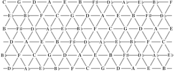

Music has been around for a very long time. The study of music, the progression of voices. Did we like the sound of a cadence? Did someone just come up with it and we were brainwashed into hearing it? Why is it such a perfect system, in which when abstracted, most music from most cultures and time periods fit in the progression diagram above? These are some questions that I ask myself everytime I compose or hear an interesting bit of music.
Now I know for a fact I am not so intensely deep into the mathematical side of music, yet. I know how freakish the math and analysis goes down into, especially the Coltrane changes, which I think he just came up with 4 random chords and pieced them together. I believe every good bit of music, at its core, is just how the relationship between the I and the V chords are treated.
Now I used the word random, which was not a random occurance at all. I realized, while composing a piece of music, that most bit of cadences follow a pretty straight forward rule. It's almost easier to write a piece from the candence to the beginning, rather than trying to come up with a cadence from whatever I came up with prior.
Only certain specific nuiances and setups can lead to certain cadences. What struck me the most while building my own composition algorithm (non-computational) was that there are only a handful of idomatic cadences possible, and I can only really make something interesting happen between the predetermined cadences. So from a probability standpoint, almost anything can happen since the I chord can lead to anywhere on the diatonic, supertonic, and any key as long as it comes back towards the cadence in a way it "leads" back to the cadence. From 16th century counterpoint to modern day jazz, all we hear in the music is a setup towards the ear-satisfying V-I relationship, sometimes even deceptively faking its effects.
So what am I trying to get at here with this idea? All things in this world follows this rule of certain outcomes being a result of previous outcomes. This idea ties in very closely with Baye's theorem and linear regression, how these certain outcomes depend on what happened prior. Composition ties in so closely with these ideas, if I were to randomly generate music. But can you hear the music? This idea, this relationship of domain and range and its structures. If I were to draw a graph (which I don't ever want to do) of all possible chords leading to each other, which Euler sketched a similar idea, and it included a cadence (it has a terminal vertex, unlike Euler's indefinite graph). My graph would resemble something like a neural network of all possible progression of chords in our scale system.
Let's move onto something a little more practical, a trading algorithm. The price changes of a ticker can represent notes/voicies, and other measurements of volume, volitility, and maybe even news, can mean something in terms of music. What is most similar is the fact that everything is based on time, there is a tempo and rhythm to the movement of different metrics of a ticker, hence we can use the same ideas to map out the different outcomes (its either gonna go up or down(it doesn't it just does whatever it wants)) and use machine learning as our "ears" to hear if our composition is any good.
I honestly don't know where I'm going with this, but upon a little more thinking, we can classify any arbitrary chord to a state. This state is very similar to superposition, as in we do not know what the chord exactly is unless we know the whole piece from start to end, or we give it a state. The state is like a roman numeral of a key, and we can fit the roman numeral to be any key depending on how we look at it. There are two Markovian approaches to this thinking, a Bayesian approach where we try to deduce what key we are in from the previous notes, or a Hidden Markov Model (HMM) where we also take in account for the numerous keys the arbitrary chord could take in. These two models can be used in adjacent, and they compliment each other quite well.
Now I think to myself with this idea, it's cool and all, but there is nothing new. Bayes' theorem and HMM are pretty common in ML and HFT algorithms, but I think the thought process of composition gives a whole new approach of creating a trading algorithm. Instead of looking for patterns, trend, or systematic arbitrage, we are building an algorithm that takes in different metrics to create music. The prediction of keys and key changes, prediction of tempo and rhythmic changes, this can directly apply to predicting breakouts and reversals of a ticker movement, The uncertainty of I chords can related to times where we cannot exactly take risks. Noticing different patterns of a composer is very similar to past data and if there are certain motivs and cadences have any setup patterns. If we can pick out what key we are in we can pick out when we will cadence, related to the different breakout patterns a ticker likes to take. Sometimes, theres more to it than pattern, what are some instinctive things the composer could have done, this could be accounted for using HMM and realizing an underlying key change or a pivot that could have happened during that time, such as a secondary dominant before a cadence.
How is this different from any other trading algorithms? I think its a much better system of organizing different metrics for human readability. I don't think using literal musical terms, notes, and keys is the move, however, the index of uncertainty is much clearer. We can not possibly predict everything, in terms of music it could be a sneaky key change or simply back to its diatonic I chord, we don't know until we hear it. Similar to how it wouldn't be a great idea to dive into a choppy market, it would be a much better idea to catch those big swooping motion which we were much more certain of their happening (at least on the scale that I would trade in, which would be similar to scalping rather than a full fletched HFT).
Now I still don't know if what I'm saying makes any sense, so instead of blabbering on this blog, I want to try and develope this idea and connection further, for both musicians and non-musicians to understand these ideas I am putting together. A clear implementation of this idea and an implementation of utilizing these ideas in a trading algorithm.